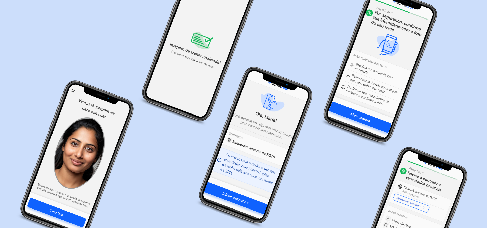
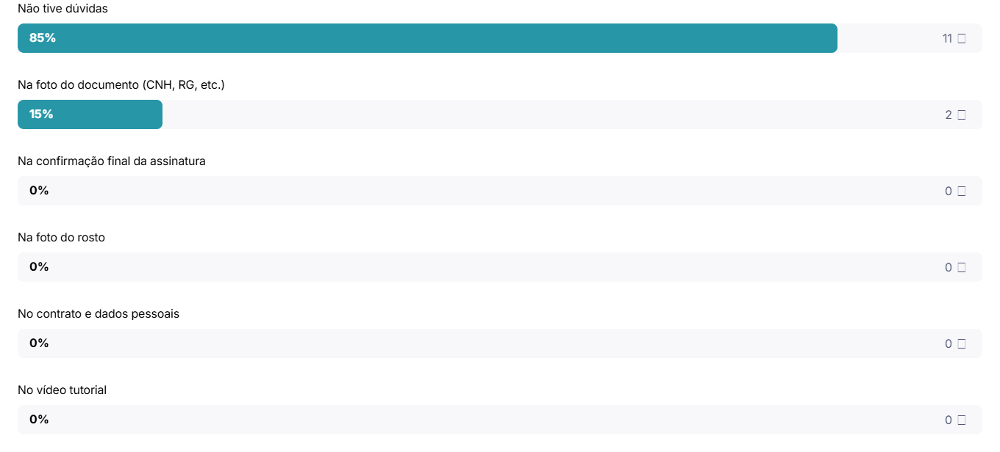
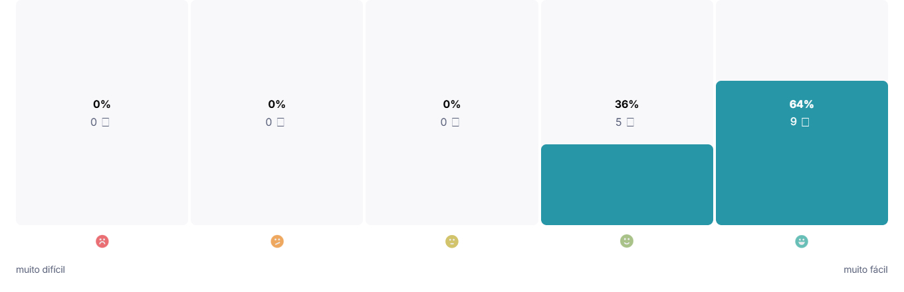
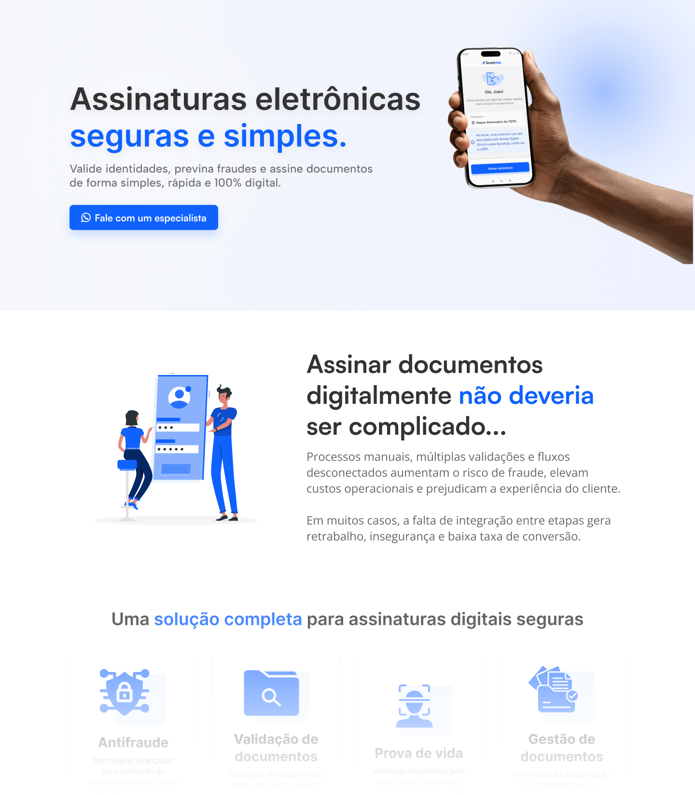

Assinatura Digital ScoreHub
Produto de assinatura digital com validação de identidade, prova de vida, gestão de documentos e prevenção à fraude em um único fluxo.

Visão geral
A Assinatura Digital ScoreHub é uma solução criada para tornar processos de assinatura mais seguros, simples e inteligentes, integrando validação de identidade, prova de vida, antifraude e gestão de documentos.
O produto nasceu dentro do ecossistema ScoreHub e evoluiu até se tornar o principal foco da plataforma, com clientes reais utilizando o fluxo em operações digitais sensíveis à fraude.
Minha atuação envolveu todo o ciclo de design: discovery, pesquisa com usuários, personas, jornada, prototipação, testes de usabilidade, melhorias de fluxo, interface mobile, plataforma web e comunicação comercial por meio da landing page.
Transformar um processo sensível em uma experiência simples e confiável
Assinar contratos de crédito digitalmente exige segurança, clareza e confiança. Ao mesmo tempo, o usuário final pode ter diferentes níveis de familiaridade com tecnologia, documentos digitais e validações biométricas.
O desafio era construir um fluxo capaz de prevenir fraudes sem tornar a experiência difícil, técnica ou assustadora para quem precisa apenas concluir uma assinatura.
O desafio
Equilibrar segurança, prevenção à fraude e uma jornada acessível para usuários reais em operações financeiras.
Entendendo comportamento, barreiras e expectativas dos usuários
Antes de evoluir o fluxo, investigamos o comportamento tecnológico dos usuários, principais dores, motivações de acesso ao crédito e pontos de insegurança durante processos digitais.

Mapeamento de comportamento tecnológico, dores, barreiras e tom de voz.
Personas criadas para orientar decisões de linguagem, confiança e acessibilidade.
Mapeando pontos de atrito antes da interface
A jornada foi estruturada considerando momentos de maior insegurança: confirmação de dados, leitura de contrato, envio de documento, prova de vida, erros de validação e conclusão da assinatura.

Jornada do usuário usada para identificar oportunidades de simplificação e segurança.
Um fluxo guiado, seguro e totalmente digital

Fluxo mobile da assinatura, pensado para orientar o usuário passo a passo.
Controle e gestão das assinaturas em um único ambiente
Além da experiência do assinante, a solução também precisava oferecer controle para empresas acompanharem contratos, status, validações, decisões e documentos.
A plataforma web foi desenhada para centralizar a gestão do processo, permitindo mais transparência e acompanhamento operacional.
Decisão de produto
Separar claramente a experiência do assinante final da visão operacional da empresa, mantendo consistência entre os dois lados do produto.

Interface web para acompanhamento e gestão das assinaturas digitais.
Validando o fluxo com usuários reais
Conduzimos um teste de usabilidade não moderado no Maze com 16 participantes em dispositivos móveis. Todos concluíram a missão, mas os dados revelaram oportunidades importantes de melhoria na hierarquia visual e nos alvos de toque.
participantes
taxa de sucesso
tempo médio
misclick rate médio

85% dos participantes relataram não ter dúvidas durante o fluxo.

64% avaliaram a experiência como muito fácil.
O que os dados revelaram
Boas-vindas com sobrecarga cognitiva
A tela inicial concentrava cliques em elementos não interativos, indicando dúvida sobre onde começar.
Seleção de documento com affordance fraco
Usuários tentavam clicar no texto das opções, mas o alvo principal estava visualmente concentrado na seta.
Tela final sem próximo passo claro
Após concluir a assinatura, usuários procuravam uma ação seguinte, como baixar comprovante ou visualizar contrato.
Melhorias orientadas por dados
Versão refinada do fluxo após análises comportamentais, testes de usabilidade e sucessivas iterações focadas em aumentar a taxa de conclusão da assinatura.
Protótipo refinado após testes de usabilidade.
Principais melhorias aplicadas
- Ampliação das áreas de toque
- Maior destaque para ações principais
- Feedback visual durante carregamentos
- Hierarquia mais clara para informações legais
- Estados visuais de seleção
- Ações pós-conclusão da assinatura
Comunicando o valor do produto
Com o avanço do produto, também participei da construção da landing page comercial da solução, conectando as decisões de UX à comunicação de valor para clientes B2B.
A página foi estruturada com storytelling de problema, solução, segurança, diferenciais, resultados e chamada para contato comercial.
Uso de IA no processo
Utilizei IA como apoio para análise de dados, estruturação de conteúdo, revisão de narrativa e exploração de alternativas para a landing page.

Landing page criada para apresentar o serviço de assinatura digital de forma clara e orientada a valor.
Um produto estratégico para a evolução do ScoreHub
Fluxo utilizado por clientes reais em operações digitais sensíveis à fraude.
Decisões orientadas por personas, jornada, dados e teste de usabilidade.
Atuação em produto, interface, experiência, comunicação e marketing.
O projeto que consolidou minha visão de Product Design
Esse projeto consolidou minha atuação como designer capaz de conectar pesquisa, produto, interface, negócio e comunicação em uma solução real.
Também reforçou a importância de validar decisões com dados, principalmente em fluxos financeiros, onde clareza, segurança e confiança são partes essenciais da experiência.
Outros projetos
Explore outros produtos e experiências que projetei.